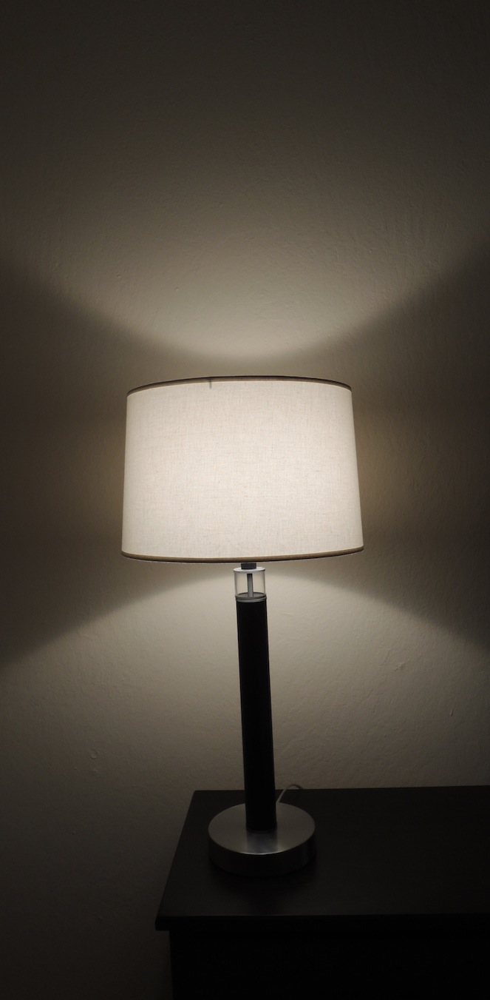
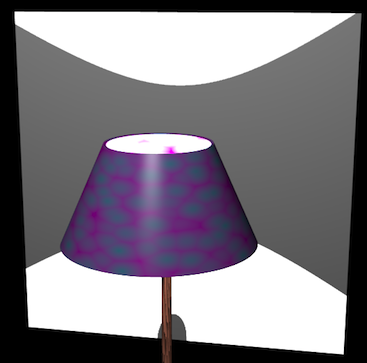
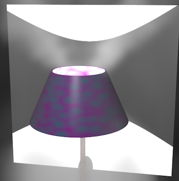
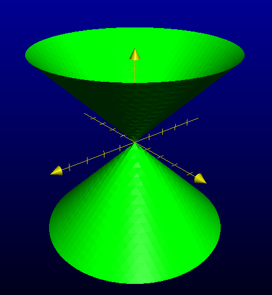

Lampshades and Analytic Geometry
Sunday, December 8, 2013
A couple of months ago, I was sitting at the dining table, and I caught myself staring at the lamp. And I had just finished reading about conics, so I immediately saw something awesome. Take a moment to think about it. Do you see it?

I saw that the pattern on the wall was very special. It belongs to a class of curves called hyperbolas. Let's see how that happens.
To start off, how does that lamp create a pattern on the wall in the first place? Well, one way to tackle this is to think about where the light is going. What parts does the lampshade actually shade, and where is there light? A clever trick here would be to get a smoke machine to create some smoke around the lamp. You can see where the the light is going in the smoke. It's fun, like a search beam (or the Batman sign).
Unfortunately, they don't sell dry ice to minors (partly because you can do really dangerous things with it, and partly because adults want to keep the fun stuff to themselves), so I did the next best thing: overkill. I created a model in Blender and simulated some smoke.
Sidenote: You haven't had a steep learning curve until you've tried to do something trivial with Blender. All the important functions are hidden away in various keystrokes, and there are all sorts of pitfalls all over the place. It's an amazing technology made with absolutely no consideration for beginners.
Rants aside, here's my snazzy modern Blender lamp with a funky lampshade and hardwood stem. Pretty, eh? It's just a sliced up cone (called a frustum) with a really bright divinely ethereal halo placed inside. I put a screen behind it to catch the projection.

You cen even see our mystery curve! Now let's blow around some smoke (easier said than done; Blender's smoke simulation takes a lot of Googling to get right).

Hmm, that looks like a cone of light coming out the top—conics! The cone kind of makes sense if you think about it (if it doesn't, think about how a spotlight works). In fact, there are two cones; one shooting out the top and an upside-down one shooting out the bottom. Together, they make a sort of straight-lined hourglass shape.
We want to find the nature of that curve, so we want to do some analytic geometry. Let's say our double-cone hourglass of illumination is centered at the origin. What equation describes a cone? Well, a cone is like several circles of increasing (or decreasing) size stacked above each other (like a pile of tires of different radii). For convenience, we can say that each circle's radius is equal to it's height above the origin.
The equation of a circle is ($x^2 + y^2 = r^2$), and if ($r = z$), we have ($x^2 + y^2 = z^2$). If we plug that into a graphing application, we get:

Note that we're doing several simplifications here, most importantly the width of the cone. We could have picked a narrower cone by squishing or stretching our equation, but this one is easy to deal with.
Now the screen: that's just a vertical plane. We describe that with ($x=c$) for some constant ($c$) (let's pick 1 for simplicity).
And now we can solve for the intersection: just substiture in ($x=1$) into the first equation: \[ 1^2 + y^2 = z^2 \]
Or, more canonically: \[ z^2 - y^2 = 1 \]
Wolfram|Alpha plots this for us.
That looks perfect. This is indeed the equation of a hyperbola you find in math textbooks (except simplified). So Result 1: When a vertical plane slices a cone, the result is a hyperbola.
Thus emboldened, we experiment
Now we get to ask the magic question: what happens if…?
. In particular, what would have happened if I had decided to play with the lamp and knocked it over? When you tilt the lamp, is it still a hyperbola?
Turns out, only to a point. Let's see how. When we tilt a plane, we go from ($x=c$) to ($z = mx + c$). Here, ($m$) is the inclination or slope of the plane [insert your own inclined plane joke here], and ($c$) is how far it is from the origin (once more, we'll let this be 1 without loss of generality). When we substitute, we get: \[ x^2 + y^2 = (mx+c)^2 = (mx + 1)^2 = m^2x^2 + 2mx + 1 \] \[ y^2 + [(1-m^2)x^2 - 2mx] = 1 \]
Now, the quadratic ($x^2$) term can either be positive, negative, or 0. If it's negative, then ($m > 1$). Of course, we get a hyperbola when the ($x^2$) term is negative (just like above). When ($ m > 1 $), the slope is steeper, or closer to vertical.
If it's positive, then ($m < 1$). We get an ellipse when the ($x^2$) term is positive. When ($ m < 1 $), the slope is flatter, or closer to horizontal. Notice how this plane will chop through just one of the cones, but all the way through. So, intuitively, you should get a stretched circle.
Ellipses show up all over the place. Planets orbit stars in ellipses (though this truth cost some scientists their reputation, and in some cases, lives).
Finally, that term can be 0 if ($m=1$). That means the plane is parallel to the side of the cone. Think about how the intersection would look. It only intersects one of the cones, but the intersection doesn't chop all the way through like an ellipse. Removing that term gives us a quadratic equation, and the resulting curve is called a parabola. Parabolas show up when you're throwing things. Baseballs follow parabolic arcs in the air when you throw them.
There three curves are called the conic sections, and they are plenty of fun to study.
Want more?
- Buy some potatoes, cut them into cones, and slice them for a while to convince yourself that I'm making some sense around here. Don't trust me.
- Since the lampshade's top and bottom openings have different diameters, the top cone and bottom cones aren't necessarily the same, and so we don't necessarily have a perfectly symmetrical hyperbola. Find the unique point where you can place the light bulb in the lamp so that the cones are in fact the same.
- You may have heard of the pencil-and-string way to build an ellipse. You can stick two pushpins into a piece of paper, and tie each end of a piece of string to one pushpin. Then trace the curve you get with a pencil by keeping the string taught—it's an ellipse! In other words, given a point on an ellipse, the sum of the distance to each pushpin is a constant. Each pushpin's position is called a focus of an ellipse. This is a perfectly valid definition of an ellipse.
What is the corresponding definition for a hyporbola? If you're ambitious, try to get the equation of an ellipse given the above definition. - A parabola is the set of all points that are equidistant from a point and a line (the distance from a point to a line is the length of the perpendicular segment from the point to the line). Can you prove this?
- Without graphing or drawing or anything, try to imagine what happens to a hyperbola as you keep on zooming out. What does it look like?
You get a pair of intersecting lines called the asymptotes. What are the equations of the asymptotes of ($y^2 - x^2 = 1$)?
P.S. The lesson here wasn't about conic sections. The lesson here was that there is really cool math in everything. Even lampshades. And you gotta grok math to see them.
Cheers,
Hardmath123